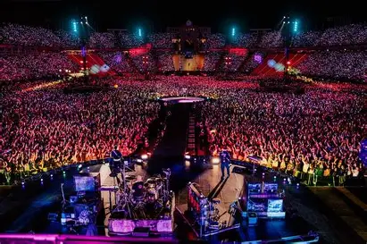
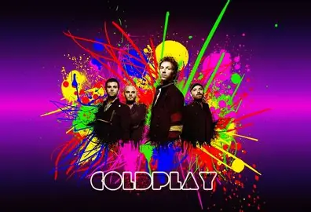

¿QUIÉNES SOMOS?
SOMOS UN GRUPO DE FANS DE COLDPLAY UNIDOS POR LA MÚSICA, LA ENERGÍA Y LOS MENSAJES QUE TRANSMITEN SUS CANCIONES. ESTE ESPACIO NACE PARA COMPARTIR NOTICIAS, EXPERIENCIAS, RECUERDOS DE CONCIERTOS, FOTOS, CURIOSIDADES Y TODO LO QUE NOS CONECTA CON LA BANDA. QUEREMOS QUE ESTE BLOG SEA UN PUNTO DE ENCUENTRO PARA TODOS LOS QUE VIBRAMOS CON SU MÚSICA.
POTENCIAMOS LAS EXPERIENCIAS DE LOS FANS
NUESTRA MISIÓN ES COMPRENDER, INFORMAR, ENTRETENER Y CELEBRAR A LOS FANÁTICOS MEDIANTE LA CREACIÓN DE LAS MEJORES COMUNIDADES, CONTENIDOS, SERVICIOS Y EXPERIENCIAS DE ENTRETENIMIENTO Y JUEGOS.
